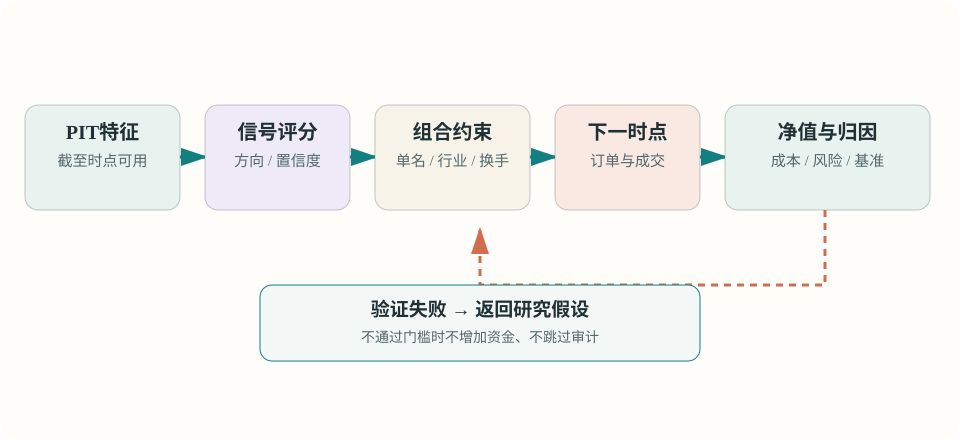
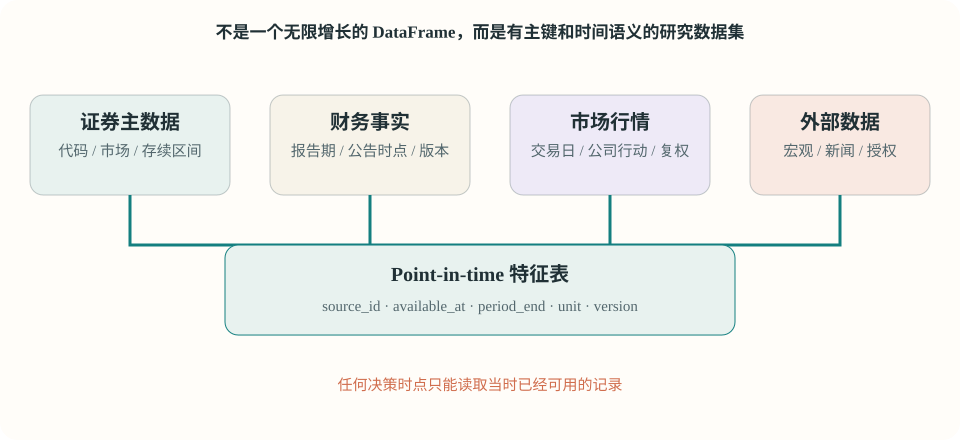
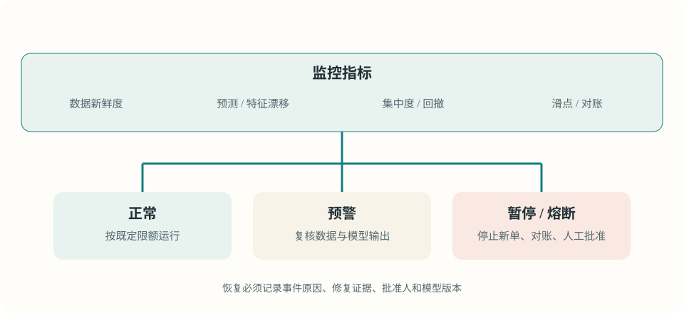

CHAPTER 28 · INTEGRATED RESEARCH CAPSTONE
综合实战项目：从研究假设到可审计组合
把证券分析、量化研究、AI辅助、组合风险、真实执行时点和持续监控整合为一套可复现工作流。
一个模型给出90分的股票，为什么仍然不能直接买入？
假设一个选股模型给某只股票打出90分，基本面评分很高，价格动量也很强。但进一步检查发现：关键财务数据在决策日之后才公告；模型使用的是今天的行业成分股回填历史；组合里同一行业已有40%仓位；交易时该股票停牌或成交深度不足。此时90分不代表一笔可以执行的投资决策。
完整的证券研究系统必须把数据可用时间、分析假设、模型信号、投资者约束、组合构建、成交成本和风险监控连成一条证据链。它的目标不是生成一条漂亮净值曲线，而是让任何一个历史决策都能回答：当时知道什么、为什么采取这个仓位、如何执行、后来发生了什么，以及模型在哪些条件下应该停止工作。

第一步：把投资任务写成可检验的研究章程
开始取数前先写一页研究章程（Research Charter）。它至少明确：投资者的基础货币、可投资市场、证券池、基准指数、投资期限、调仓频率、风险预算、最大回撤容忍度、流动性要求、卖空/杠杆限制、交易渠道和数据许可。若这些条件没有定义，策略表现就没有明确的比较对象。
研究章程还要区分战略配置和战术信号：战略配置决定长期资产风险预算；战术信号决定在允许范围内的主动偏离。基准应在看回测结果前确定，不能事后挑一个表现最差的指数来证明策略优秀。
| 项目 | 需要写清楚 | 常见错误 |
|---|---|---|
| 投资范围 | 市场、证券类型、历史存续状态 | 只用今天仍上市的股票 |
| 信息时点 | 公告、入库、决策和执行时间 | 用报告期代替公告日 |
| 基准 | 宽基/行业/现金基准及再平衡规则 | 事后更换基准 |
| 风险限制 | 单名、行业、杠杆、流动性、换手 | 只设一个止损阈值 |
| 执行口径 | 下一可交易时点、成本、未成交规则 | 信号日收盘价假设成交 |
第二步：建立数据契约，确保每个数字有身份和时间
一个可复现研究表的每个字段都要说明：证券标识、报告主体、会计概念、单位、币种、期间、公告时间、数据供应商、版本和许可。财务数据至少区分财务所属期与公众可获得时间；行情数据需要交易日历、停牌、公司行动和复权锚点；宏观数据还要记录首次发布值与后续修订。

对于美国申报数据，可以从SEC EDGAR API读取提交历史和XBRL事实；对中国市场则应使用交易所披露和有授权的数据服务，并核对其接口字段和使用许可。不同市场的公司代码、会计准则和报告模板不能直接混用。缺失值也不能全部填零：未披露、停牌、接口失败和真实零值是四种不同状态。
历史回测应在每个决策时点只连接当时已可见的版本。若财报在10月20日首次公告、11月5日更正，10月31日的历史查询必须看到初版，而不是后来更正后的数字。证券池也应按历史时点构造，以避免生存者偏差。
第三步：把基本面、估值、价格和AI输出变成可比较特征
多因子评分前先定义经济含义与方向。成长因子可以使用收入或利润增长，但必须处理低基数和并购影响；质量因子可观察现金流与利润匹配、资本回报和杠杆；估值因子要区分股权价值与企业价值口径；动量和低波因子要使用严格滞后的价格窗口。对于金融、周期和轻资产行业，部分比率不可直接横向比较。
把特征转换为横截面百分位排名，可以避免不同单位直接相加；但标准化范围、行业中性化、极值处理、缺失值策略和权重都必须在训练/研究期确定。单一硬门槛（例如所有行业统一要求ROE高于15%或负债率低于60%）会把行业商业模式和资本结构差异误当作质量差异。
AI输出可以作为文本情绪、事件分类、风险提示或候选解释，但必须单独保存模型版本、输入来源和置信度。没有证据支持的LLM摘要不能直接成为数值特征；模型对某段公告的解释也不能替代原始财务数据。
第四步：把分数变成受约束的组合，而不是无约束排行榜
从股票排名到目标持仓之间还需要投资组合规则。最简单的教学示例可以按得分排序，逐一分配仓位，同时限制单只证券权重、行业总权重和剩余现金；生产系统通常还要加入风险贡献、流动性、换手、交易单位、涨跌停和投资者适当性等约束。
如果给单个证券分配风险预算B（基点）、年化波动率σ（百分数）和0到1之间的信号强度q，一个简化的单名仓位近似为：
例：单名风险预算30bp、年化波动率25%、信号强度0.8，未受其他约束的仓位约为30/25×0.8=0.96%。这不是“0.96%的预期收益”，而是一个简化的风险预算换算。
第五步：回测必须模拟真实的决策、成交和成本顺序
如果策略使用t日收盘价计算指标，那么信号最早只能在t日收盘数据可用后形成；默认应在t+1的下一个可交易时点执行，除非你能证明策略参与了可行的收盘集合竞价。回测必须保留决策时间、订单时间、成交时间和估值时间，而不能简单把同一天的信号与同一天收盘收益相乘。
回测应至少与宽基基准、等权股票组合和简单规则基准比较，并报告毛收益、净收益、波动率、最大回撤、换手、容量、行业暴露、现金比例和不同市场阶段表现。交易成本需要说明佣金、税费、买卖价差、滑点和市场冲击是否被包含，避免重复计费或只用固定手续费代表全部执行成本。
除了计算组合整体收益，还要解释收益从哪里来。以行业为分组的 Brinson–Fachler 归因，可以把主动收益拆为配置、选择和交互效应。该分解属于持仓型绩效归因的一种方法；解释时必须使用同一期间、同一行业分类和一致的基准口径，且应核对归因总和能否还原组合主动收益。这是单期算术归因；多期结果需要采用合适的链接方法，不能直接逐期相加。CFA Institute 的Portfolio Performance Evaluation梳理了绩效测量、归因与评价之间的关系：
代码复核示例可直接调用 brinson_fachler_attribution，逐行业输出配置、选择和交互贡献，并自动检查总和是否与主动收益一致。
from examples.capstone_lab import brinson_fachler_attribution
result = brinson_fachler_attribution(
portfolio_weights={"Tech": 0.60, "Health": 0.40},
benchmark_weights={"Tech": 0.50, "Health": 0.50},
portfolio_returns={"Tech": 0.12, "Health": 0.05},
benchmark_returns={"Tech": 0.10, "Health": 0.04},
)
print(result["totals"])
print(result["active_return"]) # must reconcile
不能把样本内最优参数、未来修订财报、今日成分股或理想化成交价放进历史回测。调参过程本身也要记录；如果最终测试区间被反复用于选择模型，它就不再是独立测试集。
第六步：投产后持续监控，异常时要能暂停和追溯
模型部署不是研究结束，而是进入新的监控阶段。数据端监控公告延迟、字段缺失、价格异常和公司行动；模型端监控特征分布、预测置信度、分类错误率和模型版本；组合端监控回撤、风险贡献、行业集中、换手和流动性；执行端监控滑点、部分成交、拒单、重复订单和账户对账。

如果数据源中断、模型输入超出训练分布、订单状态无法对账或组合风险越过授权上限，应有暂停新交易、人工复核、修复记录和恢复审批机制。任何恢复都应记录事件原因、修复证据、模型/配置版本和批准人。
毕业项目交付：研究备忘录、复现程序与反证清单
本仓库的examples/capstone_lab.py提供离线研究原语：PIT财务版本查询、情绪加权、汇率换算、协方差风险贡献、横截面排名、受约束配置、换手限制、成本后收益和最大回撤。它是教学研究骨架，不是完整生产级回测框架，也不连接真实市场或券商。
from examples.capstone_lab import composite_scores, allocate_capped
rows = [
{"ticker":"A","growth":0.18,"cash_quality":1.2,"volatility":0.28},
{"ticker":"B","growth":0.12,"cash_quality":0.9,"volatility":0.22},
{"ticker":"C","growth":0.10,"cash_quality":1.4,"volatility":0.18},
]
factor_weights = {
"growth": (0.30, True),
"cash_quality": (0.40, True),
"volatility": (0.30, False),
}
scores = composite_scores(rows, factor_weights)
sectors = {"A":"Tech", "B":"Tech", "C":"Health"}
portfolio = allocate_capped(scores, sectors,
max_weight=0.25, sector_cap=0.40)
print(scores)
print(portfolio)在仓库根目录运行：python3 examples/capstone_lab.py；测试命令：python3 -m unittest discover -s examples -p 'test_capstone*.py' -v。测试覆盖PIT更正、未来信息排除、情绪时效、汇率收益、协方差风险贡献、排名与组合上限、换手约束、成本/回撤和风险预算仓位。
最终研究备忘录必须回答
- 研究假设是什么？什么证据会推翻它？
- 每个输入字段何时可用，是否存在授权和版本问题？
- 基准、训练/验证/测试区间和交易成本如何预先定义？
- 组合受哪些单名、行业、流动性、风险和换手约束？
- 哪些市场情景会让策略失效？触发暂停的条件是什么？
- 结果能否从原始数据和代码重新生成，而不是依赖一张截图？
方法、数据接口与风险治理资料
- CFA Institute (2026), Backtesting and Simulation
- CFA Institute (2026), Portfolio Performance Evaluation
- CFA Institute Research Foundation (2019), Performance Attribution
- SEC, EDGAR Application Programming Interfaces
- Tushare Pro, Daily Market Data API
- Tushare Pro, Adjusted Price and End-Date Anchor
- NIST (2024), AI RMF Generative Artificial Intelligence Profile
- FSB (2021), AI and ML by Market Intermediaries and Asset Managers
- 中国证监会：《证券市场程序化交易管理规定（试行）》
实际部署须按适用市场、账户权限、数据许可和现行监管规则单独核验；本章示例不构成投资建议或真实交易系统。